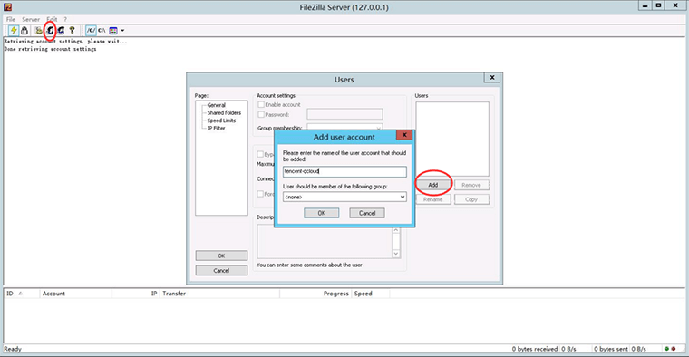
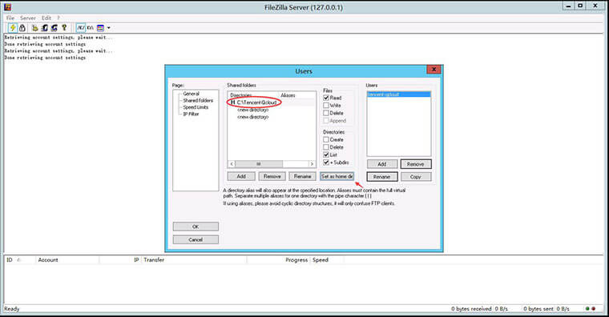
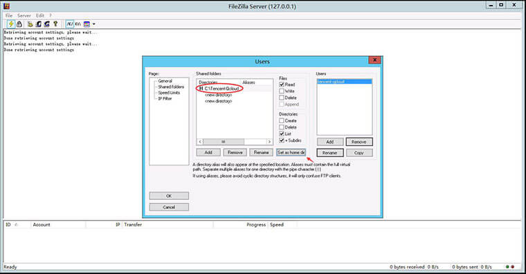
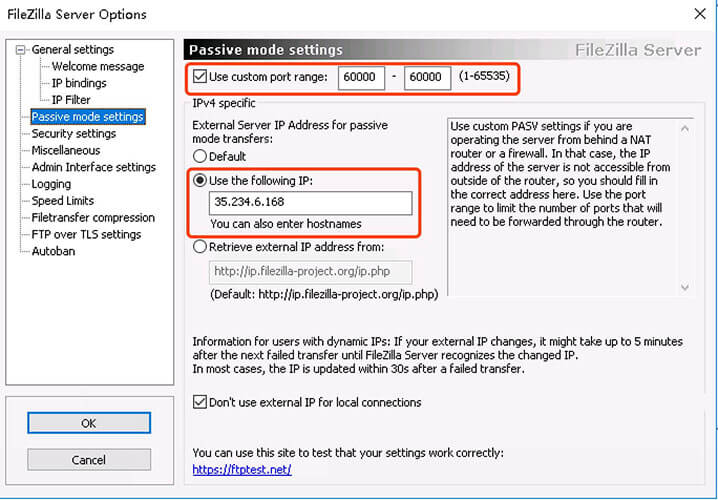
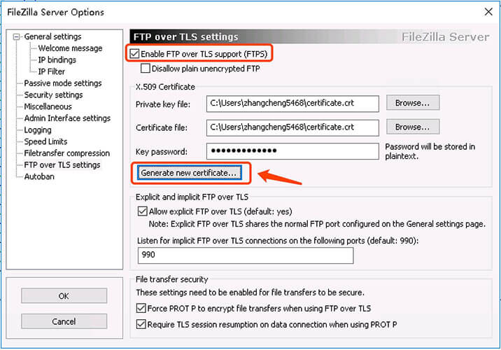

FTP安装和配置
1. Debian/Ubuntu
1) 安装vsftp
$ sudo apt install vsftpd
2) 配置vsftp
# 编辑vsftp配置文件
$ vi /etc/vsftpd.conf
作以下配置：
| 配置 | 作用 |
|---|---|
anonymous_enable=NO |
禁用匿名用户 |
local_enable=YES |
允许本机登录 |
write_enable=YES |
允许写入操作(上传或删除) |
前两项配置为默认值，一般只需要修改write_enable即可。
# 修改配置后需要重启服务
$ sudo service vsftpd restart
3) 用户配置
安装vsftp时会自动创建ftp用户组。在ftp组中的用户都可以进行ftp连接。用户的ftp目录默认限制为用户的主目录。所以只需要将现有用户添加到ftp组或创建用户指定到ftp组中即可。
现有用户
# 将用户colin添加到ftp组 $ sudo gpasswd -a colin ftp # 完成后colin可以登录ftp，共享目录默认为 /home/colin新建用户
# 添加test用户 $ sudo useradd -m -g ftp test # 完成后test可以登录ftp，共享目录默认为 /home/test
如果想多用户共享同个ftp目录，可以创建多个用户主目录指向共享目录即可。可以将共享目录的用户组设置为ftp组,以保证所有ftp用户的都有此目录权限。
多用户共享目录
# 创建共享目录 $ mkdir /usr/share/ftp # 修改目录所在组 $ sudo chgrp -R ftp /usr/share/ftp/ # 修改共享目录权限 $ chmod -R 470 /usr/share/ftp # 创建user1,user2用户到ftp组并指定主目录为共享目录 $ sudo useradd -d /usr/share/ftp/ -g ftp user1 $ sudo pssswd user1 $ sudo useradd -d /usr/share/ftp/ -g ftp user2 $ sudo pssswd user2 # user1,user2 都可登录ftp并共享/usr/share/ftp/目录
ftp用户一般只可进行ftp操作。如果常规用户(非ftp用户)想使用ftp，添加到ftp组即可使用主目录使用ftp功能。如果想访问其他ftp用户的共享目录，如上面案例的/usr/share/ftp/,添加相应权限即可。
ftp服务器配置完成后，务必开放ftp端口(默认21)，不同服务器开放方式不同，在此不再赘述
2. Windows Server
我们推进使用FileZilla在Windows Server中快速搭建FTP服务器。
FileZilla是一个免费开源的FTP软件，分为客户端版本和服务器版本，具备所有的FTP软件功能。可控性、有条理的界面和管理多站点的简化方式使得Filezilla客户端版成为一个方便高效的FTP客户端工具，而FileZilla Server则是一个小巧并且可靠的支持FTP&SFTP的FTP服务器软件。
FileZilla服务端仅支持Windows平台，客户端支持Windows/mac OS/Linux。
1) 安装
https://filezilla-project.org/download.php?type=server 下载服务端软件后，直接安装即可。
2) 配置
点击工具栏上的user按钮小图标，进入用户配置界面；点击【Add】按钮新增用户；在弹出的对话框中输入用户名（本例测试用户名为tencent-qcloud），点击【OK】进入下一步： 
勾选“password”，为新增的用户设置密码，点击【OK】按钮：
切换到Shared folders，添加共享目录并勾选相应权限：
 

被动模式设置(Passive mode)。FTP的客户端默认以Passive mode连接服务器，Filezilla会随机打开1-65535之间的一个端口。可以根据实际客户端连接数调整开放端口数量。设置完成之后需要在服务器防火墙放开对应的端口。Google Cloud等服务器，另外还需要在服务器控制台中放开指定端口。 
启动TLS模式。解决"FTP over TLS is not enabled, users cannot securely"问题。  按照图示启用TLS模式并生成TLS证书。在FTP客户端连接服务器，并信任证书即可。